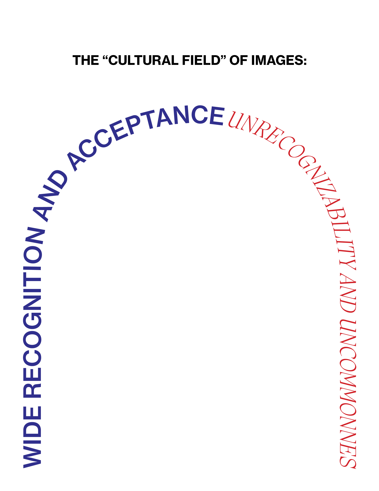

"Report: The Diminishing Marginal Value of Aesthetics"
Toby Shorin
2018-09-14
The "culture field" of images exists on a spectrum. The middle
is normalcy, which is where most aesthetics exist. The left is obsolete
aesthetics while right is experimental aesthetics.
